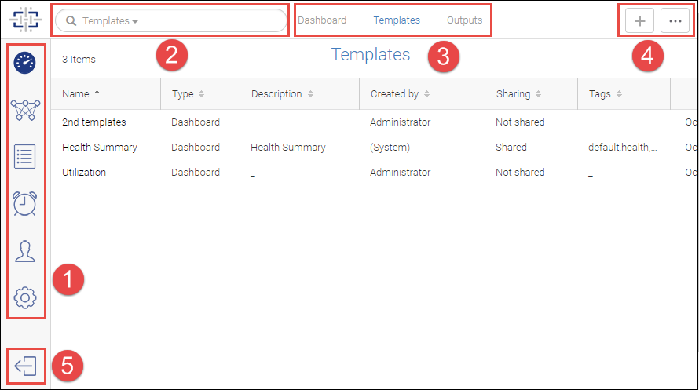

Spectre Overview¶
Spectre allows you to manage one or more SAN fabrics in multiple locations.
The Spectre user interface has the following basic components, as shown in the following figure.
Everything you do in Spectre starts with clicking one of the feature icons on the left side of the window. Click one of these icons to access a specific feature page.
Look for tabs at the top of the feature pages to display additional information.
Every page has one or more action buttons in the upper left corner.
Bulk Edit¶
The More button often contains a Bulk Edit option, which allows you to select and perform operations on one or more items at the same time. For example, you can turn monitoring on for multiple fabrics, or you can create a tag and apply it to multiple switches.

Drill-Down Pages¶
Clicking a fabric name, switch name, or port name in a table opens a drill-down page for that object. The drill-down page displays additional details about the object and may contain additional actions you can perform.
The drill-down page is different depending on the context. For example, the drill-down page for a fabric in the Inventory page is different from the drill-down page for the same fabric in the Discovery page.

Down Arrow in Table Entries¶
Many tables have a down arrow in the right-most column. Click this arrow to display additional actions you can perform on the associated object.